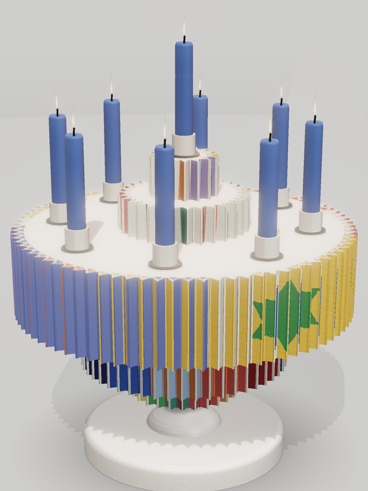
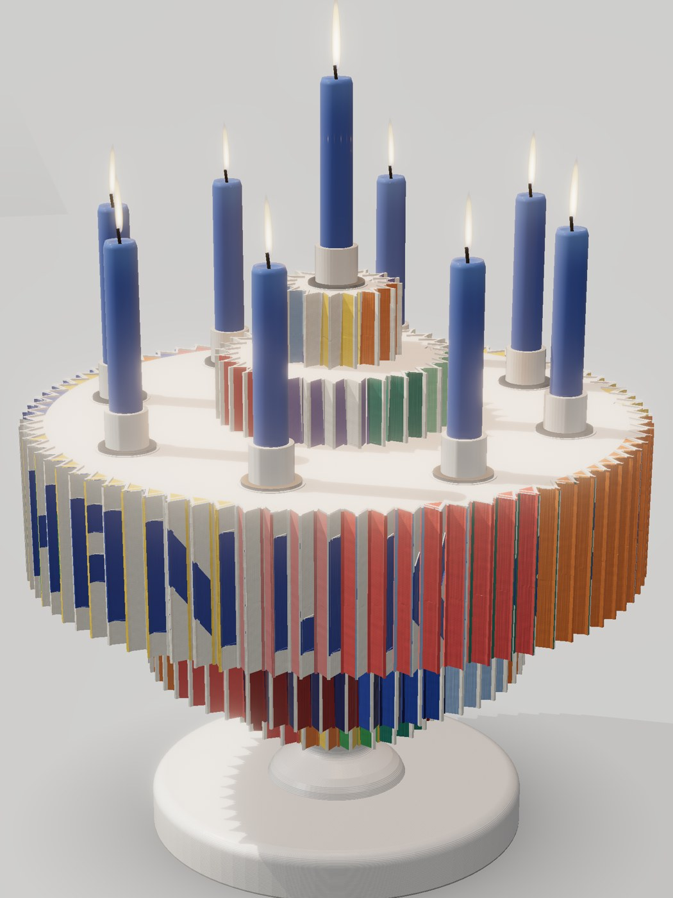
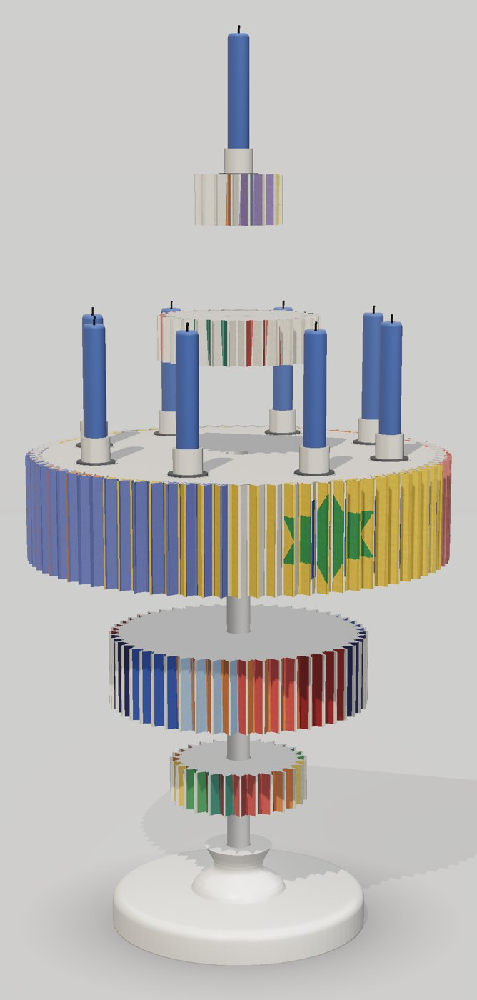
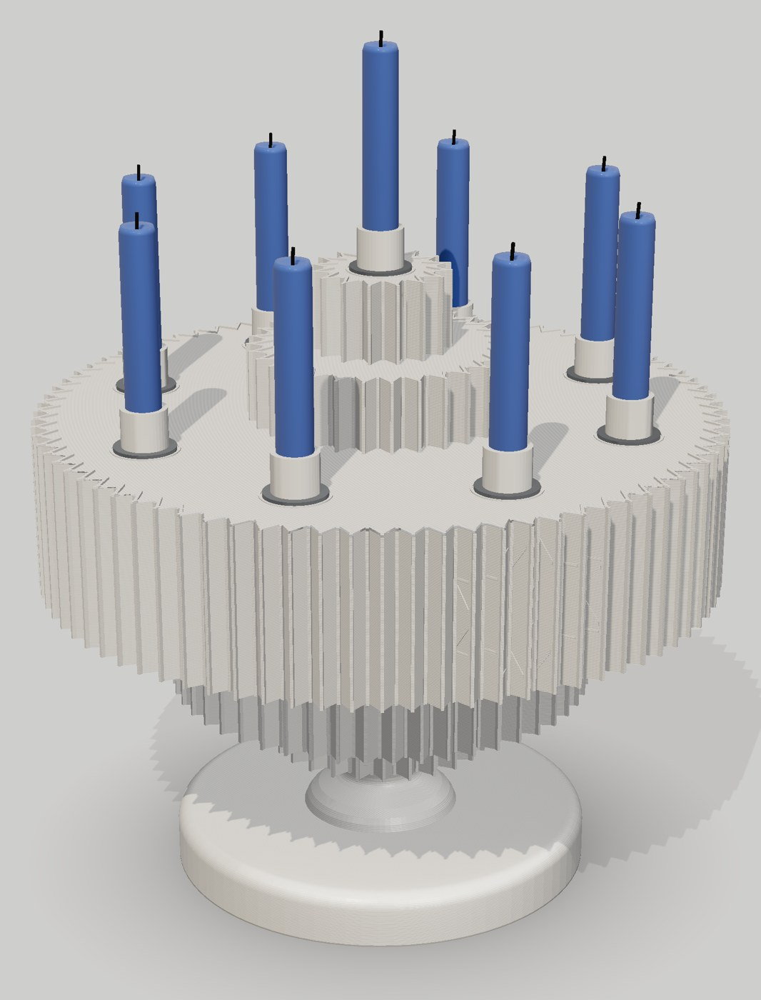
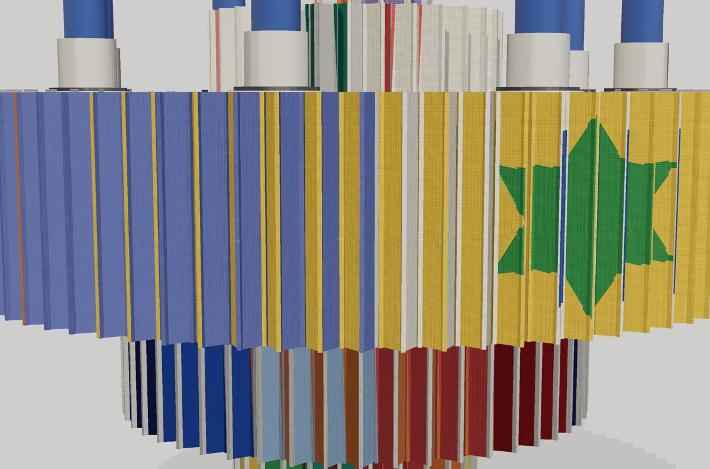
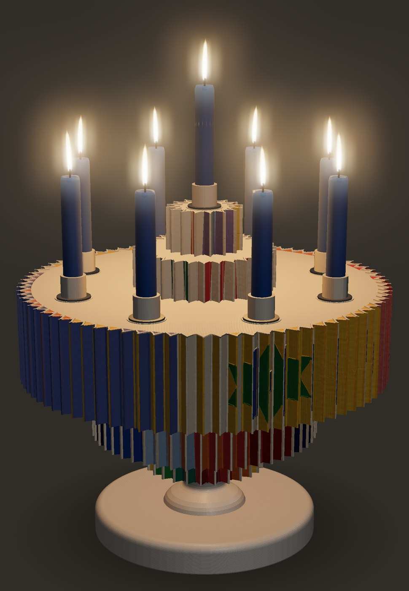

חנוכייה עם שתי תמונות
כמו בציורים של יעקב אגם, החנוכייה שלנו משתנה כשהולכים סביבה. משמאל רואים מגן דוד וסביבון, ומימין את המילה HANUKKAH וסופגנייה.
חמש טבעות משוננות, כמו במזרקה, ו־408 פאות שכל אחת מהן נצבעה ביד.
כמו בציורים של יעקב אגם, החנוכייה שלנו משתנה כשהולכים סביבה. משמאל רואים מגן דוד וסביבון, ומימין את המילה HANUKKAH וסופגנייה.
חמש טבעות משוננות, כמו במזרקה, ו־408 פאות שכל אחת מהן נצבעה ביד.

משמאל: מגן דוד
מימין: HANUKKAH
תיארנו את המזרקה, ויחד עם בינה מלאכותית בנינו מודל תלת־ממדי: הטבעות, מקומות לשמונה נרות ולשמש, ותוכנית צבעים לכל פאה.

כל החלקים הודפסו בהדפסה תלת־ממדית מפלסטיק ממוחזר, בדיוק בכמות שצריך ובלי פסולת חיתוך.

נעמי וליבי צבעו ביד כל פאה, טבעת אחרי טבעת, לפי חוברת צביעה שהכנו, בטושי Posca ובצבע אקריליק.

כשמדליקים את הנרות, האש עולה מעל הטבעות הצבעוניות, כמו האש שפורצת מתוך המים במזרקה.
יעקב אגם (1928 עד 2026) נולד בראשון לציון, ומ־1951 חי ויצר בפריז. הוא מאבות האמנות הקינטית והאופטית: יצירות שמשתנות כשהצופה זז. באפריל 2026 קיבל את פרס ישראל, וביוני 2026 הלך לעולמו, בגיל 98.
ב־1986 הוצבה בכיכר דיזנגוף המזרקה שלו: טבעות משוננות וצבעוניות שמסתובבות, סילוני מים, ומלמעלה להבת אש שפורצת מתוך המים. לאש ולמים יש מקום גם בסיפור חנוכה: נס פך השמן ואור הנרות.

נעמי וליבי אוהבות ליצור, לצייר ולצבוע. בעבודה על החנוכייה למדו שאמנות יכולה לזוז ולהשתנות, שמחשב ובינה מלאכותית יכולים להיות כלי יצירה כמו מכחול, ושהכי כיף זה לראות רעיון הופך לחפץ אמיתי שמדליקים בו נרות.